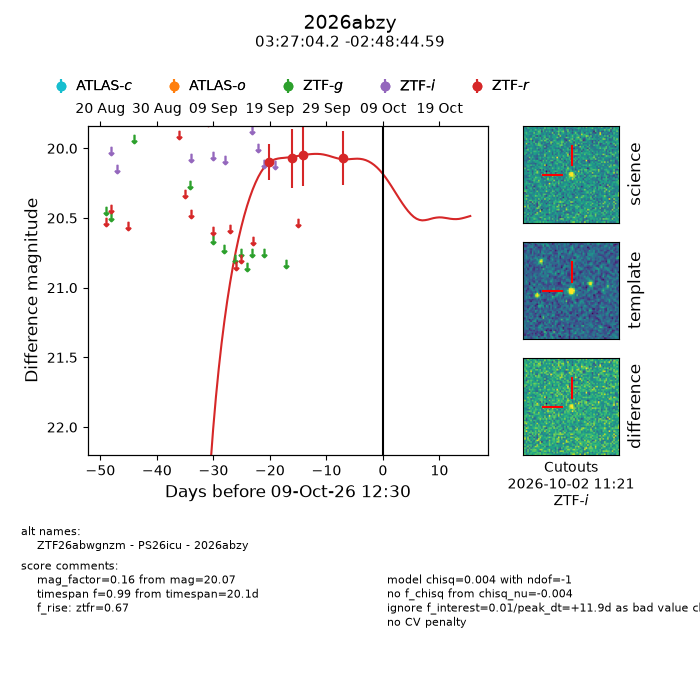
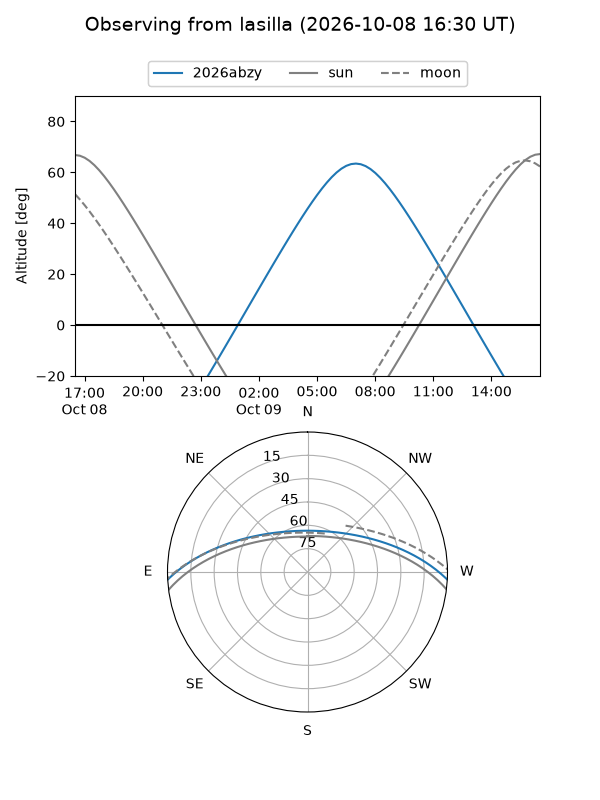
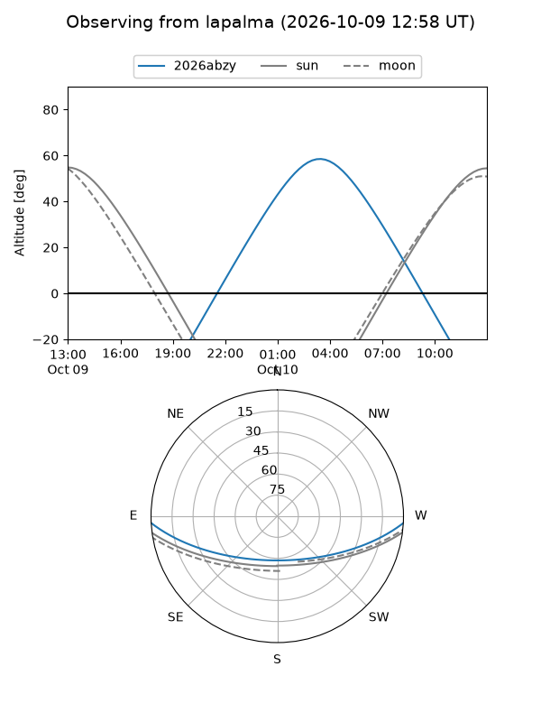
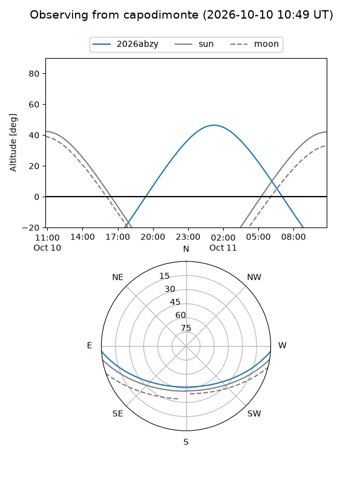
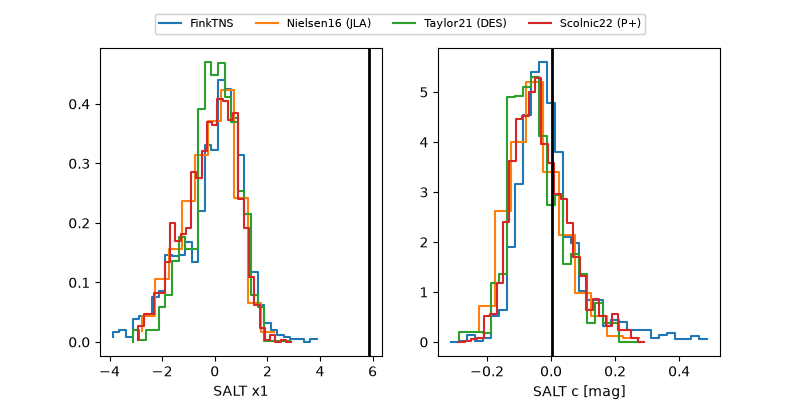

2026abzy
Target 2026abzy at 2026-10-09 12:32
Aliases and brokers:
FINK-ZTF: ztf.fink-portal.org/ZTF26abwgnzm
Lasair-ZTF: lasair-ztf.lsst.ac.uk/objects/ZTF26abwgnzm
ALeRCE-ZTF: alerce.online/object/ZTF26abwgnzm
YSE-PZ: ziggy.ucolick.org/yse/transient_detail/2026abzy
TNS name: wis-tns.org/object/2026abzy
Direct TNS query: direct search
alt names
ZTF26abwgnzm (ztf,fink_ztf)
2026abzy (tns,yse)
PS26icu (panstarrs)
Coordinates:
equatorial (ra, dec) = 51.7677,-2.81239
equatorial (HMS+DMS) = 03:27:04.25,-02:48:44.59
galactic (l, b) = (186.5813,-45.56834)
Flags:
peak dt: +11.9
Photometry:
last ztfr=20.07
4 ztfr detections
Lightcurve

Visibility



Additional plots
